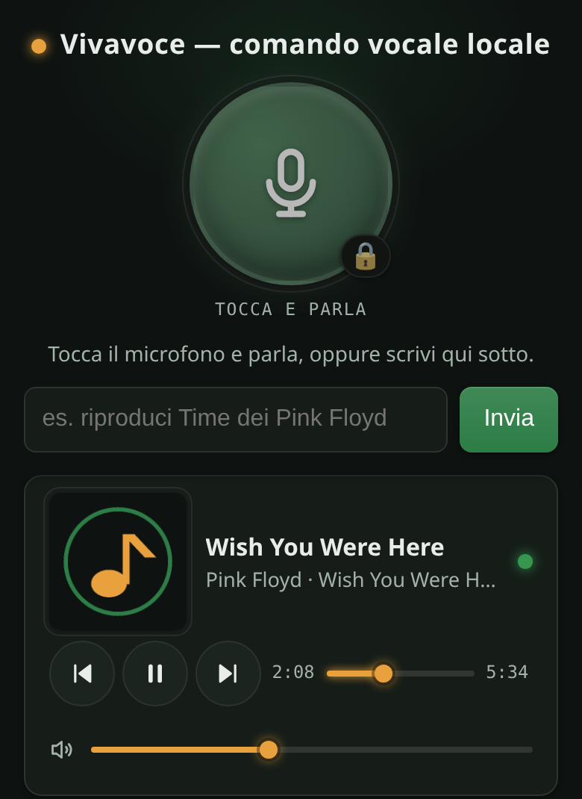
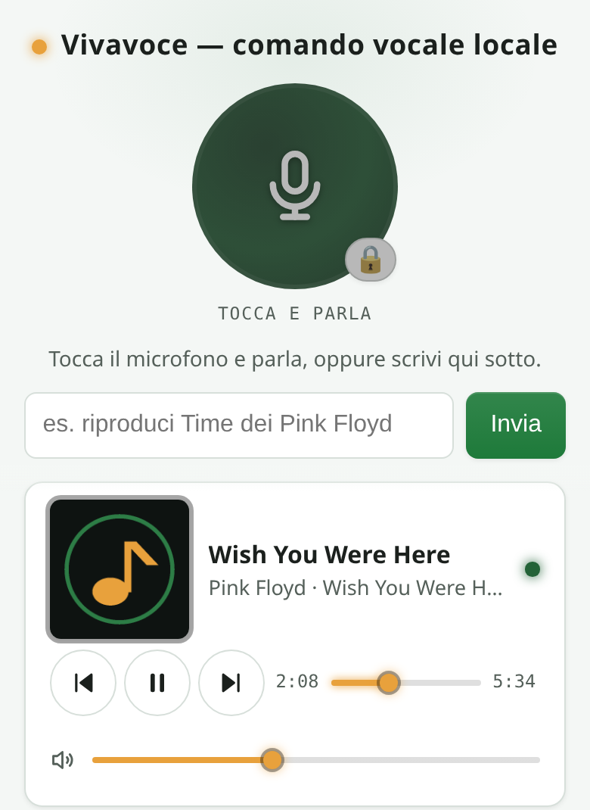

Hands-free voice control for a Lyrion Music Server or Daphile hi-fi.
A local web app for your LMS / Squeezebox system, in Italian, English, Spanish, French and German. It searches your library, TIDAL, Qobuz and Spotify, and it plays the record you asked for. No cloud service, no LLM, no account: Vivavoce sends only control commands, so the audio keeps flowing LMS → Squeezelite → your DAC, bit-perfect.
Matching is deterministic — rules and scoring, no language model — so the behaviour is testable and repeatable. You get the record you named, or an honest question. Never a silent wrong pick.
“metti Comfortably Numb dei Pink Floyd” becomes title plus artist; “… dall’album X” becomes an album request.
Streaming results are read with the artist attached, so among three “Comfortably Numb” it plays Pink Floyd’s and says so out loud.
When genuinely different songs match, it reads back three choices and you answer «metti la 2». The choices are tappable buttons too.
Your local library plus TIDAL, Qobuz and Spotify. Say «da qobuz metti …», or let it try your library first and fall back to streaming.
The page walks through the browser’s alternative transcriptions until one hits — the English titles that Italian dictation reliably mangles.
«metti Time in cucina», «pausa in salotto». A follow-up choice stays in the room you named.
Open it from any phone, tablet or PC in the house. Install it as a PWA if you like. There is nothing to sign into.


Good visual apps for this ecosystem already exist, and Vivavoce deliberately does not reinvent browsing or queueing.
The core is free and open source under the AGPL-3.0, forever. A one-time Pro licence per household, with no subscription, unlocks the hands-free features and funds the work. Every install starts with fourteen days of full Pro, microphone included — no key, no card, no account.
| Free | Pro (one-time licence) |
|---|---|
| Typed commands, on every device, over plain HTTP | 🎙️ Microphone, tap-to-talk |
| All search and playback: local library, TIDAL, Qobuz, Spotify, “did you mean” with tappable choices | 🪄 Wake word — «vivavoce metti Time» |
| Transport, volume, sleep timer, now-playing panel with artwork | 🌍 Multilingual read-back voices |
| Docker, Home Assistant add-on or bare Python, HTTPS and PWA install | 🧒 Kid-safe: PIN-protected blocklist, enforced on the server for every device asking Vivavoce |
| Updates | 🛋️ Multi-room targeting, and 🏠 local speech recognition with Whisper on your own server |
You need an LMS or Daphile on the LAN with at least one active player, and the TIDAL, Qobuz or Spotty plugin logged in if you want streaming.
docker compose up -d
# then open https://<this-host-ip>:8730 from a phone on the same networkuv sync
uv run python localvoice/server.py # auto-discovers the LMS on the LAN
# then open http://<this-pc-ip>:8730Then say, or type: «metti Comfortably Numb dei Pink Floyd» · «metti l’album The Wall» · «da qobuz metti Time» · «quali album ho di Yes» → «metti la 2» · «pausa» · «alza il volume» · «spegni tra 30 minuti».
The browser microphone needs HTTPS when you use it from another device. The Docker image sets that up for you. The text box works everywhere, even on plain HTTP. Full setup notes are in DEPLOY.md.
Yes — they are the same server lineage, and Vivavoce talks to all of them over the LMS JSON-RPC interface. Daphile is a supported target, and so is any LMS or Squeezebox setup on your network. Players can be Squeezelite, piCorePlayer, a Squeezebox Touch or anything else LMS drives.
By default the microphone uses the browser's own speech engine, which means Chrome and Android send the audio to Google, and Safari and iOS to Apple. That is the browser's doing and we say it plainly. The text box is fully local. With the Pro local-speech option, a Whisper model runs on your own server and the audio never leaves the LAN.
Italian, English, Spanish, French and German. You pick the microphone language on the page, and commands are parsed and answered in that language. The page labels themselves are Italian or English, so a Spanish, French or German session gets its answers inside the English page. The Spanish, French and German phrasings have not yet been reviewed by native speakers.
No. Vivavoce sends control commands only. The audio path stays LMS → Squeezelite → your DAC, untouched and bit-perfect, provided LMS itself is not set to resample for that player.
Yes. Add the repository under the add-on store, install Vivavoce, then import the Assist blueprint. You can then speak to a voice satellite, the phone app or the dashboard, and the reply names the song that actually started.
Not for the app itself: no telemetry, no analytics, no account. Streaming services obviously need the internet, and they are reached by LMS, not by Vivavoce. A Pro licence is activated once online and then works offline forever.
The core is AGPL-3.0 and always will be. The Pro features live in a separate directory under a proprietary licence, and the licence check is deliberately simple and unobfuscated. Everything is in the public repository.